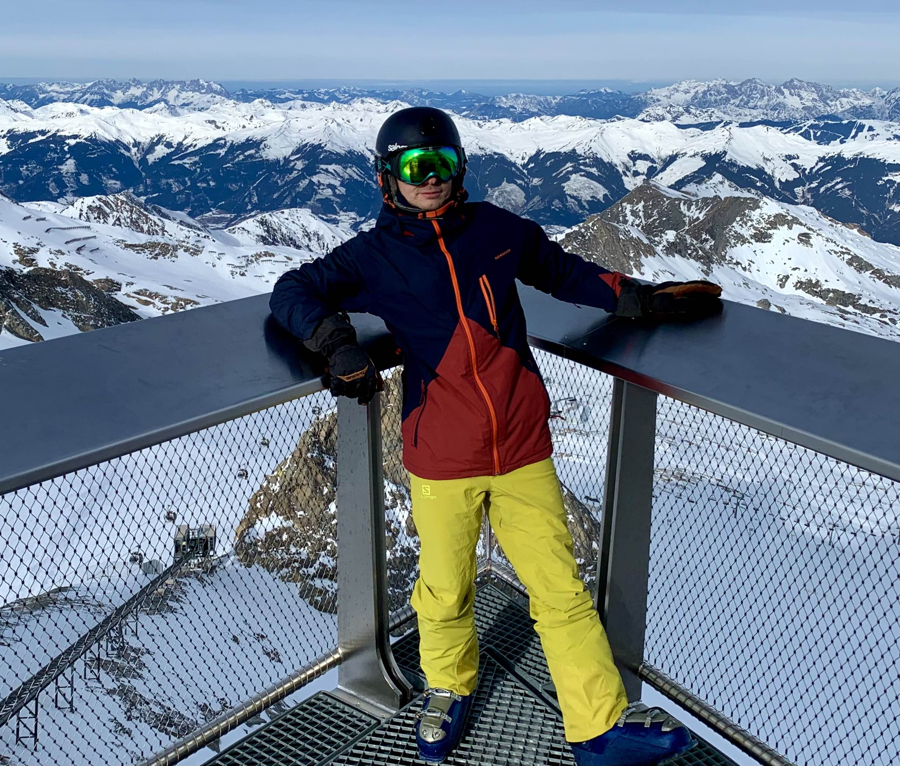
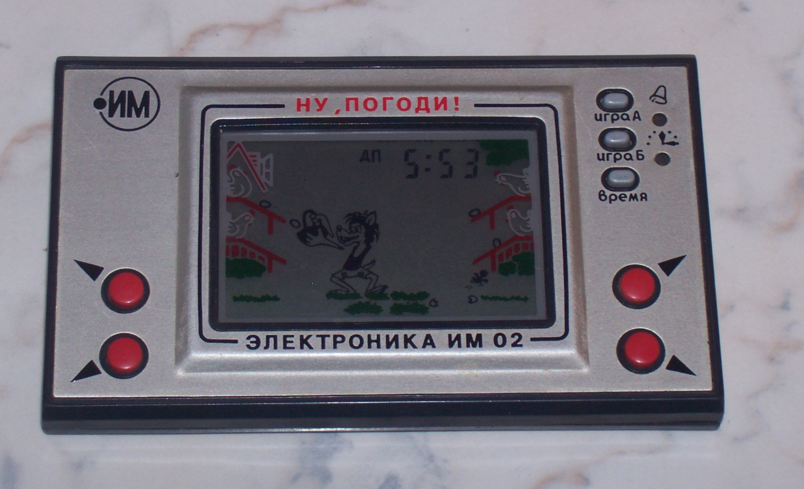
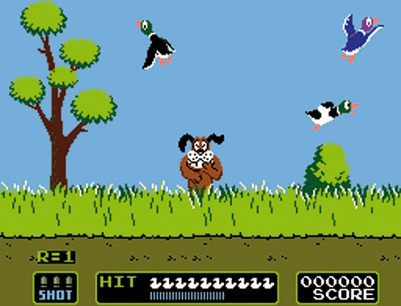
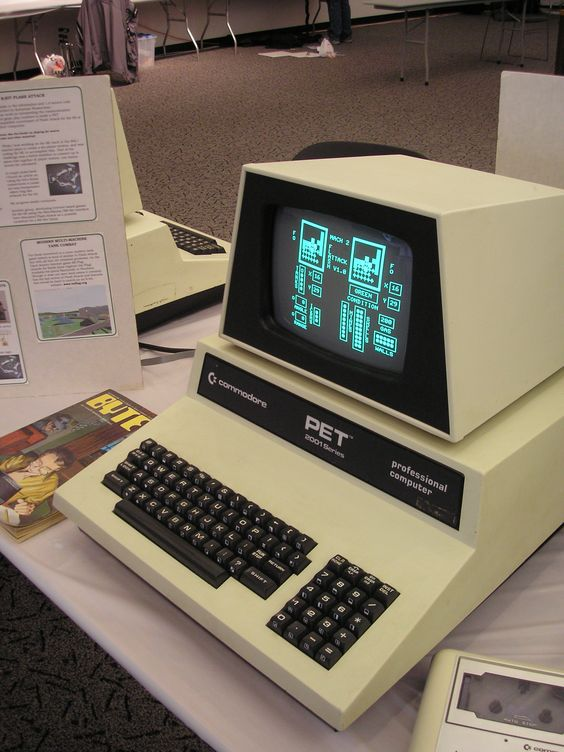
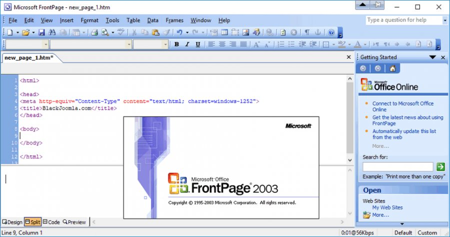
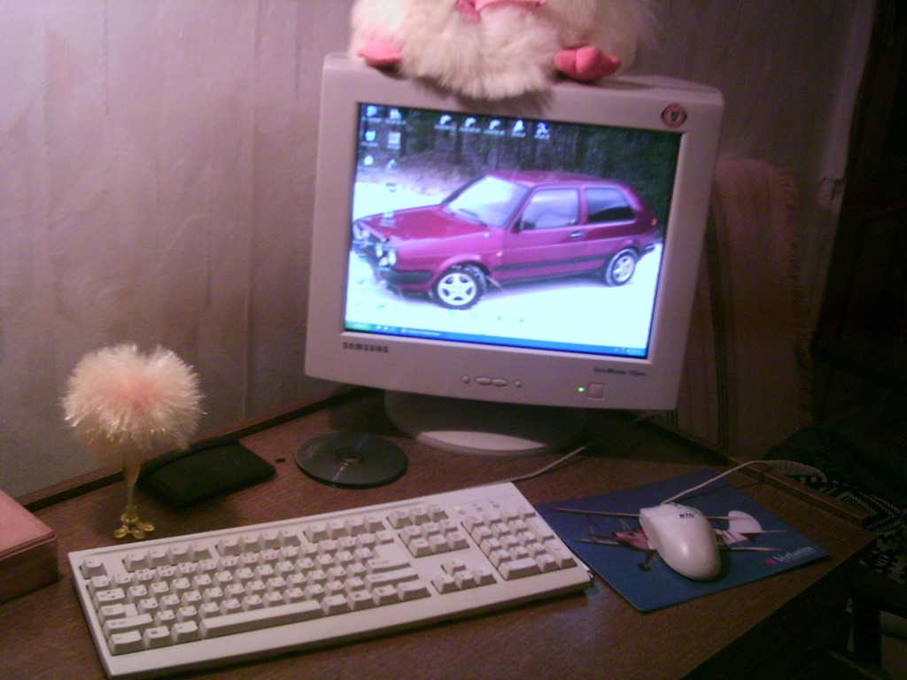
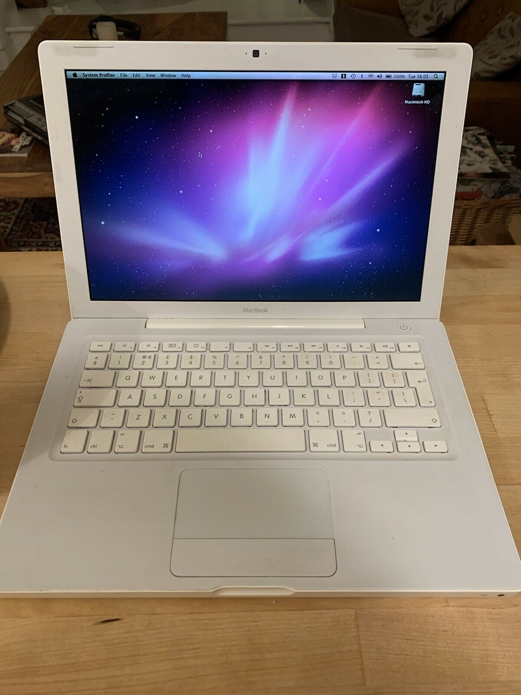

Apie save ir istoriją, nuo ko viskas prasidėjo

Esu Audrius Bejeris, 36, turintis aukštąjį išsilavinimą, nevedęs, šiuo metu dirbantis viešbutyje. Esu atsakingas už darbuotojus, kurie tiesiogiai bendrauja su klientais. Mėgstu aktyviai leisti laisvalaikį, minant dviratį, plaukiojant kajakais, haikinant, slidinėjant, lankant kitas šalis. Mėgstu istorinius, sci-fi, veiksmo filmus bei serialus. Esu geekas, domiuosi naujausiom technologijom, išmaniaisiais įrenginiais ir prietaisais. Mėgstu skaniai valgyti, bet visai nemoku gaminti. Norėčiau vairuoti Teslą ir gyventi name, kuris pats pasigamintų visą reikiamą elektros energiją iš atsinaujinančių šaltinių - saulės, vėjo, vandens.. reikalingas tik milijonas ar du :D

Manau, kiekvienas nuo mažens esame kažkuo labiau sužavėti, kažkas labiau patinka, kažkas verčia domėtis tuo labiau, nei bet kuo kitu. Kai kurie vaikai nuo mažens domisi mašinomis, kiti gyvūnais, dar kiti galbūt paišo, kažką konstruoja ir t.t. Mane, kaip ir daugelį berniukų sužavėjo kompiuteriai. Tad nuo pat pirmos, dar sovietų Lietuvoje gautos, rusiškos žaidimų konsolės, kurią kaip ir daugelį kitų dalykų tada kopijuodavo, mane tai kažkuo patraukė. Tai buvo Nintendo žaidimų konsolės klonas.

Toliau viskas sekė su prie televizoriaus prijungiamomis žaidimų konsolėmis, į kurias prieš įstatant disketę, ją būtinai rekėdavo 'prapūsti':) Žaidimai tapę klasika - super mario, pac-man, tankai, duck hunt bei daugybė kitų, kuriais keisdavaisi su klasiokais ar kaimynystėje gyvenančiais draugais.

Mokykloje, pradėjus lankyti informatikos pamokas bei būrelį, tekdavo sėdėti ne tik prie kompų, kurie turėjo diskelius, bet net ir prie Commodore kompiuterių, kurių nespalvoti ir nuo ilgo naudojimo išdegę ekranai buvo tinkami nebent pamokų tvarkaraščiui atsispausdinti su spausdintuvu, kuris skleisdavo siaubo filmo garso takelį. Va čia tai priešistorė:) Gerai, kad jais neteko kankintis per nelyg ilgai. Taip pat greitai ir tuos floppy diskelius pakeitė blizgantys kompaktai, kurių šiandien irgi beveik ir nebenaudojam.

Butent mokykloje buvo paskanautas tas saldus interneto vaisius, gilinamasi į Word™, Excel™, Power Point™ programas, kuriami piešiniai su Paint™, Flash™ animacijos, buvo pamėginta sukurti pirmoji interneto svetainė naudojantis Microsoft FrontPage™ programa, kuriamos dainos Music Maker™ kūrimo programa, klijuojami video su Movie Maker™.

Pilnai "užsikabinus" nebuvo kito kelio, kaip įtikinti tėvus, kad nupirktų stacionarų kompiuterį. Beabejo bus skirtas tik mokslams, tačiau reikėjo, kad turėtų kuo daugiau RAM atminties, bei vaizdo plokštės kuo geresnės. Visgi Need For Speed™, GTA™, Battlefield™, Max Payne™ norėjosi žaisti nustačius kuo geresnius parametrus:) Vis labiau domintis kompiuteriais, dauguma klasiokų, draugų, kaimynų prašydavo sutvarkyti jų sulėtėjusius kompus, perrašyti Windows™, įrašyti reikalingas programas ar žaidimus. Šiais laikais tuo užsiimant tai būtų niekas kitas, kaip piratavimas:)

Studijų laikais kilo dilema, kaip turėti kompiuterį tiek studijuojant, tiek ir grįžus namo savaitgaliui. Stacionaraus nepritampysi, teks ieškotis nešiojamo. Tais 2007-08 metais visi Windows'iniai nešiojami kompai buvo dar labai neišvaizdūs, stori ir sunkūs. Gyvenant barake labai sudomino kaimyno turėtas baltas Macbookas, jis domėjosi dizainu, jei kalbos ėjo apie kažką iš technologijų, jis jau tada rodydavo apžvalgas iš 'The Verge' puslapio. (Neveltui dirba Vinted'e dizaineriu:)). Būtent tas macbookas mane ir sužavėjo, nors bijojau, kad visgi nebus lengva pereiti prie kitos operacinės sistemos, tačiau tas hipsteriškas inner me visgi nugalėjo. Sukrapštęs visus per vasarą uždirbtus pinigus, įsigyjau Macbooką ir aš. Best choice ever made:) Nuo to laiko aš esu avelė ir didelis Apple© fanboy.

Prieš kelis metus apsiėmiau daryti svetainę sodybai prie ežero, visko mokiausi bei mėginau pats, pasinaudodamas galybe pavyzdžių iš interneto. Pavyko ir buvo idomu, nors ir puslapis buvo labiau mėgėjiškas bei informacinis. Dažnai matant įvairius kitus puslapius, gali lengvai atskirti, kur darbas atliktas profesionaliai, o kur be didesnių žinių. Po ilgų metų užsieny draugai vis dažniau ir dažniau klausia, kada grįši. Nors anksčiau to nebuvo, dabar noras vis stiprėja. Mastydavau, o ką aš grįžęs galėčiau veikt? Vienas draugas pasiūlė pasiimti kokius nors kompiuterių kursus, kita draugė būtent rekomendavo codeacademy. Ir ilgai nesvarstęs nusprendžiau, jog būtų smagu kurti svetaines, kurios būtų ne tik mielos akiai, tačiau būtų ir funkcionalios, idomios naudoti. Smagu, kai viskas dera ir suderintai veikia. Būtent tas gražus pateikimas mane ir veža:) Todėl aš čia ir bandau visa tai kurti kartu su Jūsų pagalba.
Trečios paskaitos namų darbai